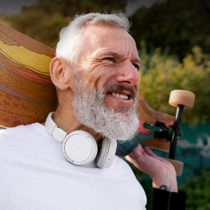
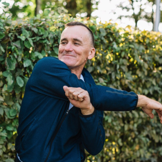
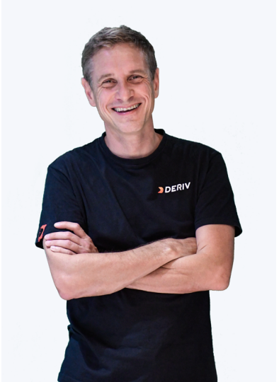

<!DOCTYPE html>
<html lang="en">

<head>
  <meta charset="utf-8" />
  <meta http-equiv="X-UA-Compatible" content="IE=edge" />
  <meta content="width=device-width, initial-scale=1.0, maximum-scale=1.0, user-scalable=0" name="viewport" />
  <meta name="author" content="" />
  <title>N1 Healthcare Ltd</title>

  <!--fav icon-->
  <link rel="shortcut icon" href="images/fav_icon.png" type="image/x-icon" />
  <!-- Default links -->
  <link href="css/bootstrap.min.css" rel="stylesheet" type="text/css" />

  <!-- google font -->
  <link href="https://fonts.googleapis.com/css2?family=Poppins:wght@300;400;500;600;700;800;900&display=swap"
    rel="stylesheet">

  <!--Plugin Css-->
  <link href="css/slick.css" rel="stylesheet" type="text/css" />
  <link href="css/slick-theme.css" rel="stylesheet" type="text/css" />

  <!-- custom links -->
  <link href="css/fonts.css" rel="stylesheet" type="text/css" />
  <link href="css/custom.css" rel="stylesheet" type="text/css" />
  <link href="css/responsive.css" rel="stylesheet" type="text/css" />
  <link href="css/developer.css" rel="stylesheet" type="text/css" />
  <!-- Google tag (gtag.js) -->
<script async src="https://www.googletagmanager.com/gtag/js?id=G-PWJG9QEDTP"></script>
<script>
  window.dataLayer = window.dataLayer || [];
  function gtag(){dataLayer.push(arguments);}
  gtag('js', new Date());

  gtag('config', 'G-PWJG9QEDTP');
</script>
</head>

<body class="about_page">
  <!-- Header start -->
  <header class="hedr">
    <div class="container">
      <nav class="navbar">
        <a href="index.html" class="navbar_brand">
          
        </a>
        <div class="navmenumain">
          <ul class="nav_menu">
            <li class="nav_item active">
              <a href="about.html" class="nav_link">
                About Us
              </a>
            </li>
            <li class="nav_item">
              <a href="services.html" class="nav_link">
                Our Services
              </a>
            </li>
            <li class="nav_item">
              <a href="health_report.html" class="nav_link">
                The Health Report
              </a>
            </li>
            <li class="nav_item">
              <a href="our_team.html" class="nav_link">
                Our Team
              </a>
            </li>
            <li class="nav_item">
              <a href="faq.html" class="nav_link">
                FAQ
              </a>
            </li>
          </ul>

          <button type="button" class="d-inline-block d-lg-none nav_togge_btn" id="nav_togge_btn"
            onclick="this.classList.toggle('opened');this.setAttribute('aria-expanded', this.classList.contains('opened'))"
            aria-label="Main Menu">
            <svg width="37" height="37" viewBox="0 0 100 100">
              <path class="line line1"
                d="M 20,29.000046 H 80.000231 C 80.000231,29.000046 94.498839,28.817352 94.532987,66.711331 94.543142,77.980673 90.966081,81.670246 85.259173,81.668997 79.552261,81.667751 75.000211,74.999942 75.000211,74.999942 L 25.000021,25.000058" />
              <path class="line line2" d="M 20,50 H 80" />
              <path class="line line3"
                d="M 20,70.999954 H 80.000231 C 80.000231,70.999954 94.498839,71.182648 94.532987,33.288669 94.543142,22.019327 90.966081,18.329754 85.259173,18.331003 79.552261,18.332249 75.000211,25.000058 75.000211,25.000058 L 25.000021,74.999942" />
            </svg>
          </button>
        </div>
        <a href="mailto:longevity@n1.healthcare" class="loginbtn">
          Contact us
        </a>
      </nav>
    </div>
  </header>
  <!-- Header end -->

  <!-- banner start -->
  <section class="abt_bnr">
    
    <div class="abso_abt_bnr">
      <div class="container">
        <div class="abt_bnr_txt">
          <h1>About Us</h1>
        </div>
      </div>
    </div>
  </section>
  <!-- banner end -->

  <!-- our mission sec -->
  <section class="our_mission" style=" background-image: url(images/our_mission_bg.png);">
    <div class="our_mission_cont">
      <div class="container">
        <div class="mission_txt_wrp">
          <div class="our_miss_left_cont our_misson_txt_cont">
            <div class="misson_icon">
              
            </div>
            <h3>Our Mission</h3>
            <p>At N1 Healthcare, our mission is to transform healthcare delivery by providing in-depth, personalized
              health insights that empower individuals to take proactive steps towards enhancing their well-being and
              longevity. We strive to be at the forefront of the personalized healthcare revolution, setting new
              standards for precision and care in the industry.</p>
          </div>

          <div class="our_miss_right_cont our_misson_txt_cont">
            <div class="misson_icon">
              
            </div>
            <h3>Our Vision</h3>
            <p>We envision a world where healthcare is not just reactive but proactive, tailored to each individual's
              unique genetic makeup, lifestyle, and health history. Our vision is to make personalized healthcare
              accessible to those who value a deeper understanding of their health and seek to actively manage it for
              a
              longer, healthier life.</p>
          </div>
        </div>
      </div>
    </div>
  </section>
  <!-- our mission sec -->

  <!-- feature sec -->
  <section class="feature_sec">
    <div class="feature_wev"></div>
    <div class="fea_inr_cont">
      <div class="container">
        <div class="fea_hdr_txt">
          <h3>Welcome to a trailblazer in the realm of personalized healthcare services</h3>
          <h2>Founded by the visionary duo, Jean Yves Sireau and Nick Sireau, our company is built on the groundbreaking
            concept of providing highly customized and comprehensive health reports to our esteemed clients. Our journey
            began with a simple yet profound idea: to revolutionize the way individuals perceive and manage their
            health.
          </h2>
        </div>

        <div class="feature_wrp">
          <div class="feature_row">
            <div class="fea_txt">
              <h2>Innovative Approach to Healthcare</h2>
              <p>We differentiate ourselves by offering a service that goes beyond the traditional scope of medical
                care. Our comprehensive health reports are meticulously crafted, encompassing everything from a thorough
                analysis of family medical history and DNA sequencing to a detailed examination of lifestyle, nutrition,
                and all past and present medical tests. This holistic approach ensures a complete understanding of our
                clients' health profiles.</p>
            </div>
            <div class="fea_icon">
              <div class="feat_icon_cir">
                
              </div>
            </div>
            <div class="fea_img">
              
            </div>
          </div>

          <div class="feature_row">
            <div class="fea_txt">
              <h2>Global Team of Experts</h2>
              <p>Our strength lies in our diverse team of highly skilled technical writers and specialized clinicians
                from around the world. This team brings together a wealth of expertise, ensuring that each health report
                is not only comprehensive but also enriched with insights from various medical perspectives and
                practices.</p>
            </div>
            <div class="fea_icon">
              <div class="feat_icon_cir">
                
              </div>
            </div>
            <div class="fea_img">
              
            </div>
          </div>

          <div class="feature_row">
            <div class="fea_txt">
              <h2>Commitment to Excellence</h2>
              <p>At N1 Healthcare, we are committed to upholding the highest standards of quality and precision in every
                aspect of our service. We continuously update our methodologies and practices to stay abreast of the
                latest advancements in healthcare and medical technology.</p>
            </div>
            <div class="fea_icon">
              <div class="feat_icon_cir">
                
              </div>
            </div>
            <div class="fea_img">
              
            </div>
          </div>

          <div class="feature_row">
            <div class="fea_txt">
              <h2>Empowering Our Clients</h2>
              <p>The core of our service is empowering our clients with knowledge. We
                believe that informed clients are better equipped to make decisions about their healthcare and
                lifestyle,
                leading to improved health outcomes and enhanced quality of life.</p>
            </div>
            <div class="fea_icon">
              <div class="feat_icon_cir">
                
              </div>
            </div>
            <div class="fea_img">
              
            </div>
          </div>
        </div>
      </div>
    </div>
  </section>
  <!-- feature sec -->

  <!-- join us -->
  <section class="join_us" style="background-image: url(images/join_bg.png);">
    <div class="container">
      <div class="join_inr_wrp">
        <h2>Join us at N1 Healthcare Ltd., where we are dedicated to pioneering a new era in healthcare, focused on
          personalization, precision, and the pursuit of optimal health and longevity for each of our clients.</h2>
        <!-- <form action="#">
          <div class="join_frm_wrp">
            <input type="email" placeholder="Email" required>
            <button type="submit">Submit</button>
          </div>
        </form> -->
      </div>
    </div>
  </section>
  <!-- join us -->

  <!-- bios sec -->
  <section class="bios">
    <div class="container">
      <h2>Founders Bios</h2>
      <div class="bios_slick">
        <div class="bios_box">
          <div class="bios_auth">
            
          </div>
          <div class="auth_txt">
            <h3>Nick Sireau</h3>
            <p>Nick Sireau, PhD, is co-founder of N1 Healthcare, and brings a wealth of experience and a deep
              passion for healthcare innovation. With a background in medical sciences and a strong inclination
              towards research and development, Nick has always been at the forefront of adopting new approaches
              to healthcare. Nick is the CEO and Chair of Trustees at the AKU Society, a patient group that helps
              people with AKU, a rare genetic disease affecting both his children. The AKU Society and Nick are the
              winners of the 2021 Members Award by EURORDIS (the European Organisation of Rare Diseases)
              because of their work on successfully developing a new treatment for AKU. Nick is co-founder and
              Chair of Beacon, an organisation that helps all rare disease patient groups. He is the editor of ‘Rare
              Diseases: Challenges and Opportunities for Social Entrepreneurs’ (Greenleaf 2013) and of the 'Patient
              Group Handbook: A Practical Guide for Research and Drug Development' (Beacon 2016). Nick is cofounder and
              Chair of Orchard OCD, a medical charity that funds research into obsessive-compulsive
              disorder (OCD), a common yet debilitating mental health condition. He is also co-founder of Sirgartan
              Therapeutics, a biotech that focuses on new treatments for OCD, and of Sireau Labs, a biotech that is
              developing mRNA therapy for AKU and other rare genetic diseases. Nick has a BA in history and
              economics from Oxford University, an MSc in management studies from the Lyon Graduate School of
              Business, an MA in Journalism Studies from Westminster University and a PhD in social psychology
              from City University. He is a fellow of the Ashoka Fellowship of Social Entrepreneurs.</p>
          </div>
        </div>

        <div class="bios_box">
          <div class="bios_auth">
            
          </div>
          <div class="auth_txt">
            <h3>Jean Yves Sireau</h3>
            <p>Jean-Yves Sireau is the visionary entrepreneur behind N1 Healthcare Ltd. His journey in the business
              world began at a young age, marked by a spirit of innovation and a penchant for strategic thinking.
              Before co-founding N1 Healthcare, Jean-Yves had already established himself as a successful
              entrepreneur. Jean-Yves is the founder and CEO of Deriv, an online trading broker founded in 1999.
              The company has become one of the world’s largest online brokers, offering a wide range of CFD and
              other derivative contracts on forex, stocks, and derived indices to over a million clients worldwide.
              Now a global company, Deriv Group Ltd has more than 1,300 employees across 20 offices worldwide.</p>
            <p>Jean-Yves's inspiration for N1 Healthcare stemmed from his keen interest in personalized medicine and
              his belief in the transformative power of technology in healthcare. He recognized the gap in tailored
              healthcare services for discerning individuals and saw an opportunity to bring his entrepreneurial vision
              to this niche sector. His goal was to create a service that not only catered to the unique health needs of
              each client but also empowered them with comprehensive, data-driven insights for better health
              management.</p>
          </div>
        </div>
      </div>
    </div>
  </section>
  <!-- bios sec -->


  <!-- start footer -->
  <footer>
    <div class="container">
      <div class="footheading">
        <h5>Join us at N1 Healthcare</h5>
        <h2>Where we turn your health data
          into actionable insights, helping you
          chart a course towards a healthier,
          more informed life</h2>
      </div>
      <!-- <div class="formflex">
        <input type="email" class="form-control" placeholder=" Email">
        <button class="loginbtn">Submit</button>
      </div> -->
      <div class="footmenuflx">
        <a href="index.html" class="footlogo"></a>
        <ul class="fmenulist">
          <li>
            <a href="about.html"> About Us</a>
          </li>
          <li>
            <a href="services.html">Our Services</a>
          </li>
          <li>
            <a href="health_report.html">The Health Report</a>
          </li>
          <li>
            <a href="our_team.html">Our Team</a>
          </li>
          <li>
            <a href="faq.html">FAQ</a>
          </li>
        </ul>
        <a href="mailto:longevity@n1.healthcare" class="ftemail">Email : longevity@n1.healthcare</a>
      </div>
      <p class="copy_right"><a href="privacy_policy.html">Privacy Policy</a></p>
    </div>
  </footer>
  <!-- end footer -->


  <script src="js/jquery-3.6.4.min.js"></script>
  <script src="https://kit.fontawesome.com/ab591c4248.js" crossorigin="anonymous"></script>
  <script src="js/bootstrap.bundle.min.js"></script>
  <script src="js/slick.min.js"></script>
  <script src="js/custom.js"></script>
</body>

</html>
